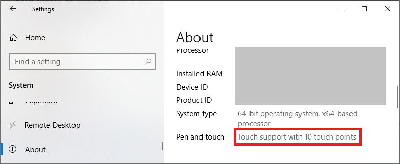
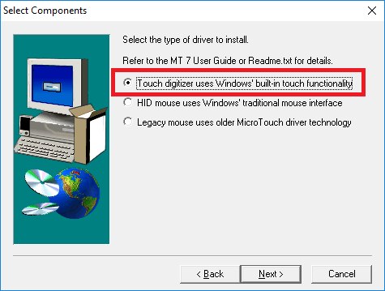
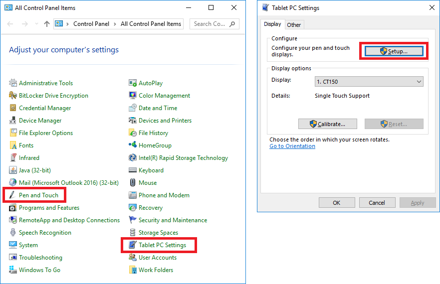
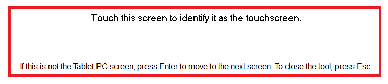
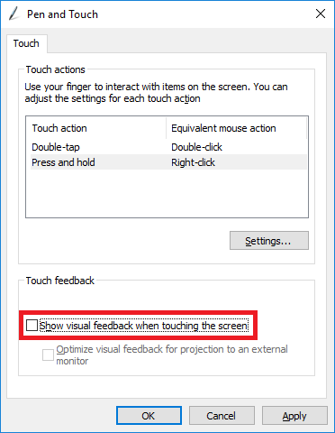

The National Institute of Mental Health (NIMH) is part of the National Institutes of Health (NIH), a component of the U.S. Department of Health and Human Services.
To check whether your PC has touch capability, go to Settings and open System. Then click About on the left panel in the resulting window. If touch input is supported, you will see "Touch support with XX touch points" or a similar message as below.

There is a pretty good chance that your touchscreen will work without installing any driver. If you are certain that the display is a touchscreen but see "No pen or touch input is available", try (re)installing the display driver. Be certain to choose the right driver. For example, 3M MicroTouch series come with three types of drivers, but only the first one is compatible with Windows' built-in touch functionality.

Test the screen with your finger to see if the cursor moves. The cursor may be moving on the other screen. Then go to "Tablet PC Settings" in the control panel and configure your touch display as shown below.


Visual feedback for touches can be disabled in the "Pen and Touch" settings. It is automatically disabled in NIMH ML 2.2.

The National Institute of Mental Health (NIMH) is part of the National Institutes of Health (NIH), a component of the U.S. Department of Health and Human Services.